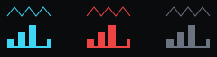
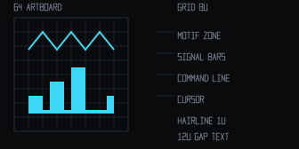
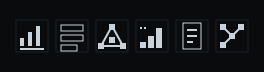
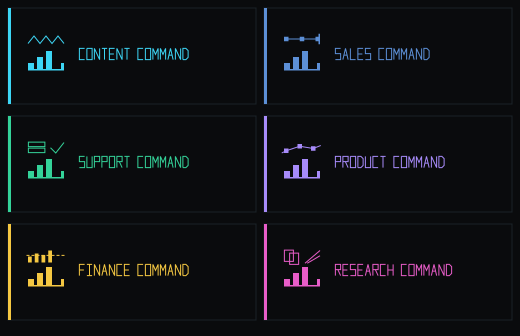

0. OVERALL VIEW
Three asset classes: brand system (SEALED) ·
Content Command core (IN PROGRESS, 70%) ·
SFGa-OS Recon tooling (DESIGN-ONLY, gated).
Strengths: data ontology, scoring logic, terminal design language. Gaps: operational maturity and loop closure.
Direction: build the shell on real data → harden ops → close the feedback loop → climb the autonomy ladder with human veto gates.
Full detail: PROJECT-AUDIT.md · AUTONOMY-ROADMAP.md
| PROGRAM LENS | STATE | % | BINDING CONSTRAINT |
|---|---|---|---|
| Brand & design language | SEALED | 95% | UI integration + favicon/OG export |
| Content Command core | IN PROGRESS | 70% | Shell on live data; sync hardening |
| Operational maturity | NOT STARTED | 20% | Health, retries, idempotency, error queues |
| Feedback loop closure | ROADMAP | 25% | Publish→metrics→re-score automation |
| Autonomy | L1.5 | — | Continuous ingestion + closed loop |
1. APP PORTFOLIO — STATUS REPORTS
| APP | STATUS | % COMPLETE | WHAT IT NEEDS |
|---|---|---|---|
| CONTENT COMMAND ↗ core vertical |
IN PROGRESS functional prototype shipped · design 92 |
78% |
Shell routes LIVE on mock data (dashboard→library→radar→scorer→brief→agent→sources); next: swap mock layer for real API connectors + sync retries + idempotency; prompt versioning + tag review queue; scorer rubric + ICP context; weekly brief cron; sources secret store |
| DECRYPTION & RECONSTRUCTION recon (derived) |
DESIGN-ONLY · GATED ui concept + spec complete · no extraction logic (policy) |
45% |
Written-authorization workflow + legal review; integration with established audited forensic engines (not custom crypto); encrypted workspace + hash-chained audit store; red-team review before any build |
| PROJECT INTELLIGENCE DASHBOARD meta |
SHIPPED V1 | 90% |
Wire to live metrics API; auto-refresh; per-app drilldowns |
| BRAND & LOGO SYSTEM meta |
SEALED V1 | 95% |
CSS token export; favicon/OG raster pipeline; integrate in product shells (GATE D per new vertical) |
| SALES COMMAND vertical |
DESIGN-READY | 15% |
Reuse core shell + engines; CRM connectors; pipeline ontology |
| SUPPORT COMMAND vertical |
DESIGN-READY | 15% |
Reuse core shell + engines; ticket connectors; resolution taxonomy |
| PRODUCT COMMAND vertical |
DESIGN-READY | 15% |
Reuse core shell + engines; event/feature telemetry; journey ontology |
| FINANCE COMMAND vertical |
DESIGN-READY | 15% |
Reuse core shell + engines; ledger connectors; threshold policy |
| RESEARCH COMMAND vertical |
DESIGN-READY | 15% |
Reuse core shell + engines; corpus ingestion; citation engine |
CONTENT COMMAND — SUBSYSTEM LEDGER
| SUBSYSTEM | % | WHAT IT NEEDS |
|---|---|---|
| Data architecture / schema | 100% | Confirm indexes, REFS, pgvector readiness |
| Outlier compute engine | 95% | Baseline windowing; small-sample bias handling |
| Platform ingestion / sync | 85% | Retries, idempotency keys, incremental cursors |
| LLM enrichment / taxonomy | 80% | Prompt versioning, confidence thresholds, tag review queue |
| Idea scoring engine | 80% | Rubric weighting, ICP context, comparable retrieval |
| Hook performance scoreboard | 85% | Fatigue status, format correlation, demand-signal sort |
| Frontend terminal UI | 88% | Shell routes + signal cards + scoreboards + density rules BUILT (mock data); wire real connectors |
| Intelligence agent | 50% | Ontology routing, source citations, safe read-only SQL |
| Weekly brief / reporting | 40% | Cron trigger, report template, roll-up metrics |
| API connection cards | 30% | Sources module, secret management UI, health indicators |
| Logo / sidebar branding | 95% | Shell integration of locked brand system (this cycle closed the 40%→95%) |
| End-to-end autonomy | 25% | Close publish→performance→enrichment→re-score loop |
2. LOGO SYSTEM — TOP-LEFT SIDEBAR BRAND
Collapsed sidebar 64u mark (48–64px) · expanded sidebar 240u lockup (220–260px) ·
nothing round or oval · no capital K (structurally impossible — no K glyph exists) ·
8u grid · 1u hairline · 0u radius · 12u symbol-text gap. Full spec: LOGO-SYSTEM.md
CORE — COLLAPSED / EXPANDED / STATES





VERTICAL SET — SAME GRID, ONE SWAPPED MOTIF

DECISION TREE — WHICH EMBLEM, WHAT TO AMEND
START — need a brand mark
├─ Top-left app corner?
│ ├─ YES → sidebar collapsed? → YES: collapsed mark (dense UI? → dense mark)
│ │ → NO: expanded lockup at sidebar width (240u)
│ └─ NO ↓
├─ Which surface?
│ ├─ Content core → waveform motif + cyan
│ ├─ Registered vertical → its motif + accent (matrix §4)
│ ├─ NEW vertical → DERIVE: swap motif only (name law: “X COMMAND”, no K)
│ ├─ Module / topic badge → 16u module glyph — never the product logo
│ └─ Partner page → mark 60% opacity, no lockup
├─ State? active → vertical hue · warn → #EF4444 · neutral → #6B7280 · dense → signal lines only
└─ Ship gate: curves? K? width mismatch? altered base? → fix → brand_lint.py PASS → ship
├─ Top-left app corner?
│ ├─ YES → sidebar collapsed? → YES: collapsed mark (dense UI? → dense mark)
│ │ → NO: expanded lockup at sidebar width (240u)
│ └─ NO ↓
├─ Which surface?
│ ├─ Content core → waveform motif + cyan
│ ├─ Registered vertical → its motif + accent (matrix §4)
│ ├─ NEW vertical → DERIVE: swap motif only (name law: “X COMMAND”, no K)
│ ├─ Module / topic badge → 16u module glyph — never the product logo
│ └─ Partner page → mark 60% opacity, no lockup
├─ State? active → vertical hue · warn → #EF4444 · neutral → #6B7280 · dense → signal lines only
└─ Ship gate: curves? K? width mismatch? altered base? → fix → brand_lint.py PASS → ship
3. STEPS TO AUTONOMY
PUBLISH → METRICS SYNC → OUTLIER SCORE → ENRICHMENT RE-RUN → AGGREGATES UPDATE → SCORER RE-TRAINS → NEXT BRIEF → HUMAN APPROVES (GATE A) → PUBLISH …
LADDER
L1
Manual sync, manual scoring
◄ WE ARE HERE (L1.5: designs + engines specified/prototyped, not continuous)
L2
Auto-ingestion + auto-outlier detection
needs: retries, idempotency, health checks
L3
Auto hook/topic/format tagging
needs: prompt versions, thresholds, review queue
L4
Auto-brief generation from scored ideas
GATE A: human approves briefs
L5
Auto-weekly report + recommended slate
needs: cron pipeline, roll-up metrics
L6
Auto-publish scheduling with approval
GATE B: human approves schedule
L7
Fully autonomous loop + oversight console
GATE C: kill-switch, drop a level
NEXT 30 DAYS
- Mount Content Command shell (sidebar + dashboard + library) on real data
- Sync hardening: retries, idempotency keys, incremental cursors, health badges
- API connection cards → secret store + last-ingestion stamps
- Integrate brand system into shell (GATE D lint in CI)